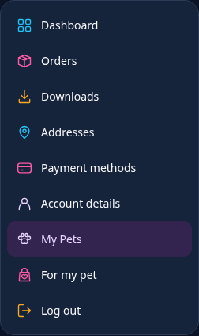
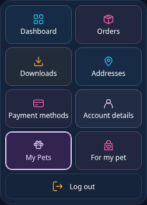
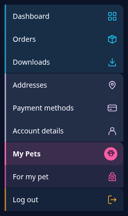

01 · RECOMMENDED
Colour lines
The clearest upgrade: a little colour beside each label, with the same familiar row layout and a soft active highlight.
Explore Colour linesOne account. Three fresh directions.
Three different layouts for all nine account items. Every option adds meaningful icons and colour while keeping the menu at its current height or shorter. Open a design, try the menu, then switch between light and dark.

The clearest upgrade: a little colour beside each label, with the same familiar row layout and a soft active highlight.
Explore Colour lines
A bolder change of shape. Small coloured tiles make the menu feel like a personal launchpad, using less vertical space.
Explore Petish tiles
A quieter, editorial layout. Colour groups related items, labels lead on the left, and icons sit neatly on the right.
Explore Colour track